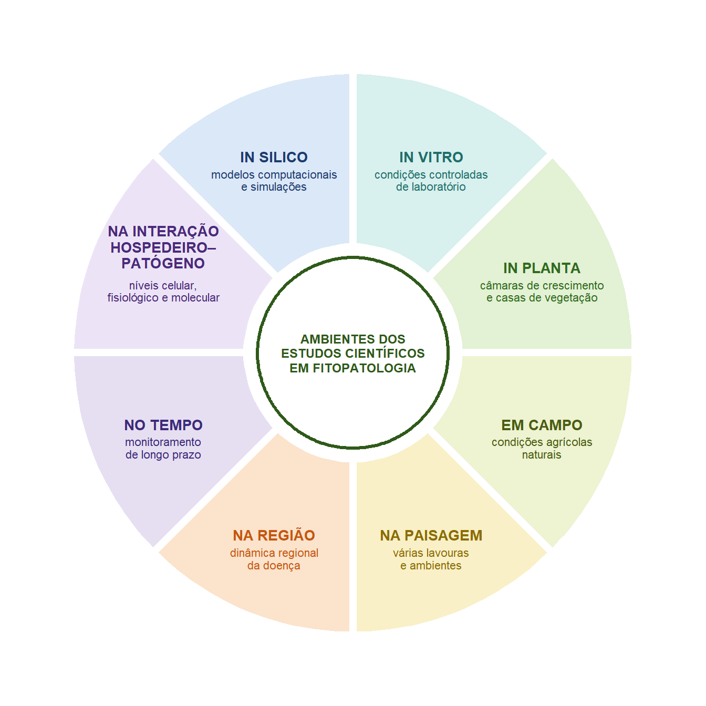

1 Por que pesquisar em Fitopatologia?
1.1 O que é Fitopatologia?
A Fitopatologia é a disciplina científica dedicada a compreender as doenças de plantas, incluindo suas causas, os mecanismos subjacentes às interações entre hospedeiros, patógenos e ambiente, os fatores que influenciam o desenvolvimento das doenças e os princípios que fundamentam o seu manejo eficaz (AGRIOS 2005). Como as doenças de plantas afetam a produção agrícola, a segurança alimentar, os ecossistemas naturais e o comércio internacional, a Fitopatologia integra conceitos e métodos de diversas áreas, como microbiologia, genética, biologia molecular, ecologia, agronomia e ciência de dados (Oliver 2024).
1.2 Que tipos de pesquisa são realizados em Fitopatologia?
A pesquisa em Fitopatologia abrange um amplo espectro de atividades científicas. As investigações podem descrever novas doenças ou patógenos, caracterizar mecanismos biológicos ou moleculares, avaliar estratégias de manejo, quantificar perdas de produção, investigar epidemias, desenvolver modelos de previsão ou sintetizar evidências de vários estudos. Esses objetivos diversos geram formas igualmente diversas de dados científicos e exigem abordagens analíticas adequadas tanto à questão de pesquisa quanto à natureza das observações coletadas.
Embora esses estudos difiram substancialmente em seus objetivos, todos compartilham uma meta comum: responder a questões biológicas por meio da coleta, análise e interpretação sistemáticas de evidências científicas. Seja o objetivo identificar um patógeno até então desconhecido, avaliar uma estratégia de manejo, compreender os fatores ambientais que impulsionam as epidemias ou investigar os mecanismos moleculares das interações patógeno–hospedeiro, o progresso científico depende de transformar observações em evidências confiáveis.
1.3 Onde a pesquisa em Fitopatologia é realizada?
A diversidade da pesquisa em Fitopatologia também se reflete nos ambientes em que os estudos são conduzidos. As investigações podem ser realizadas in silico, por meio de modelos computacionais e simulações; in vitro, sob condições controladas de laboratório; in planta, em câmaras de crescimento ou casas de vegetação; no campo, por meio de experimentos conduzidos sob condições agrícolas naturais; ou em escalas espaciais e temporais mais amplas, incluindo estudos em nível de paisagem e de região que investigam a dinâmica das doenças em vários campos, ambientes ou safras. Outros estudos concentram-se nas interações patógeno–hospedeiro nos níveis celular, fisiológico ou molecular, enquanto o monitoramento de longo prazo fornece informações sobre o desenvolvimento das doenças ao longo do tempo (Figura 1.1). Cada um desses ambientes de pesquisa responde a questões biológicas distintas, opera em diferentes escalas espaciais e temporais e gera dados com características próprias. Em conjunto, eles oferecem perspectivas complementares que contribuem para uma compreensão mais abrangente das doenças de plantas.
1.4 Estudos representativos
A amplitude da Fitopatologia talvez seja mais bem apreciada por meio de estudos representativos. Embora as investigações individuais difiram em seus objetivos, delineamentos e métodos analíticos, todas seguem o mesmo processo científico fundamental: uma questão biológica motiva o estudo, evidências são coletadas sistematicamente e conclusões são extraídas dos dados resultantes. Os quatro exemplos apresentados a seguir ilustram tipos comuns de pesquisa em Fitopatologia e a diversidade de questões científicas abordadas pelos pesquisadores. Juntos, eles cobrem boa parte da disciplina — da descoberta de novos patógenos e da avaliação de estratégias de manejo à compreensão das influências ambientais sobre o desenvolvimento das doenças e à investigação de mecanismos moleculares. Ao longo deste livro, esses exemplos serão revisitados para mostrar como diferentes questões científicas levam naturalmente a diferentes delineamentos, tipos de dados e abordagens analíticas.
DicaPesquisa na prática 1: Descobrindo uma nova doença de planta
Questão científica
O que está causando uma doença até então não relatada que afeta lavouras de coentro no Brasil?
Contexto
Em 2021, produtores de coentro na Bahia observaram tombamento, podridão do colo e podridão de raízes generalizados, que causaram perdas severas e tornaram a produção comercial economicamente inviável nas áreas afetadas. Como a doença ainda não havia sido associada a esse patógeno no Brasil, pesquisadores conduziram um estudo para identificar o agente causal e determinar se se tratava de um novo relato da doença (Silva et al. 2024).
Ambiente do estudo
- 🌱 No campo — observação dos sintomas e coleta de plantas doentes
- 🧫 In vitro — isolamento do patógeno e caracterização morfológica
- 🧬 Laboratório de biologia molecular — sequenciamento de DNA e análises filogenéticas
- 🌿 In planta — testes de patogenicidade e confirmação dos postulados de Koch
Tipos de dados coletados
- Observações de campo
- Sintomas da doença
- Morfologia das colônias
- Imagens de microscopia
- Medidas morfológicas
- Sequências de DNA
- Árvores filogenéticas
- Resultados de testes de patogenicidade
Evidência científica
Os pesquisadores integraram várias fontes independentes de evidência para identificar o patógeno:
- observação dos sintomas da doença no campo;
- isolamento do patógeno suspeito a partir de tecidos doentes;
- caracterização morfológica das culturas e das estruturas reprodutivas;
- sequenciamento das regiões ITS e cox2, seguido de análises filogenéticas;
- testes de patogenicidade mostrando que as plantas inoculadas desenvolveram os mesmos sintomas, seguidos do reisolamento bem-sucedido do patógeno.
Conclusão principal
As evidências morfológicas, moleculares e de patogenicidade, em conjunto, demonstraram que Pythium aphanidermatum era o agente causal do tombamento, da podridão do colo e da podridão de raízes do coentro, constituindo o primeiro relato dessa doença no Brasil.
Reflita sobre este estudo
Antes de ler os próximos capítulos, considere as questões abaixo.
- Qual era a questão biológica principal?
- Quais ambientes de pesquisa estiveram envolvidos?
- Quais observações eram descritivas?
- Quais observações eram quantitativas?
- Quais dados exigiram análise estatística?
- Que tipos de dados foram gerados?
- A conclusão poderia ter sido alcançada com uma única fonte de evidência?
Mensagem principal
Descobertas científicas nem sempre dependem de testes de hipóteses ou de significância estatística. Em muitas áreas da Fitopatologia, conclusões robustas emergem da integração de múltiplas linhas independentes de evidência científica.
DicaPesquisa na prática 2: Avaliando uma estratégia de manejo da doença
Questão científica
Aplicações de fungicidas reduzem de forma eficaz o míldio e protegem o manjericão cultivado em condições de campo?
Contexto
O míldio, causado por Peronospora belbahrii, é uma das doenças mais destrutivas do manjericão no mundo. Como as folhas comercializáveis precisam estar livres de sintomas visíveis, o controle eficaz da doença é essencial para a produção comercial. Pesquisadores conduziram uma série de experimentos de campo para avaliar a eficácia de diversos fungicidas sob pressão natural da doença (McGrath 2020).
Ambiente do estudo
🚜 Experimentos de campo conduzidos em condições de produção comercial.
Delineamento do estudo
- Cultivar de manjericão suscetível
- Tratamentos com fungicidas e uma testemunha sem tratamento
- Delineamento em blocos casualizados
- Quatro parcelas (repetições) por tratamento
- Doença avaliada periodicamente durante o ciclo da cultura
Tipos de dados coletados
- Incidência da doença
- Área abaixo da curva de progresso da doença (AACPD)
- Identificação do tratamento
- Bloco experimental
Evidência científica
A doença foi monitorada repetidamente ao longo da epidemia, o que permitiu aos pesquisadores comparar o desenvolvimento da doença entre os tratamentos com fungicidas e a testemunha. As médias dos tratamentos foram comparadas estatisticamente para determinar se as diferenças observadas refletiam efeitos reais dos tratamentos, e não a variabilidade experimental natural.
Principais resultados
As aplicações preventivas de fungicidas reduziram substancialmente a doença em comparação com as plantas não tratadas. Alguns programas de fungicidas proporcionaram, de forma consistente, excelente controle, enquanto outros foram consideravelmente menos eficazes. O estudo também demonstrou que manter intervalos regulares de aplicação e boa cobertura da pulverização foi fundamental para o sucesso do manejo.
Reflita sobre este estudo
- Qual é a questão biológica abordada?
- Qual é o fator de tratamento?
- Qual é a unidade experimental?
- Por que uma testemunha sem tratamento é necessária?
- Qual variável resposta representa melhor a intensidade da doença?
- Por que foram incluídas várias parcelas por tratamento?
- Quais capítulos deste livro ajudarão a analisar esses dados?
Mensagem principal
Estudos de manejo de doenças estão entre as investigações experimentais mais comuns em Fitopatologia. Eles comparam tratamentos sob condições experimentais controladas para determinar se uma intervenção reduz a doença. Ao longo deste livro, experimentos semelhantes serão revisitados para ilustrar conceitos que vão do delineamento experimental e da organização dos dados à análise estatística, à visualização e ao relato reprodutível.
DicaPesquisa na prática 3: Compreendendo como as condições ambientais influenciam o desenvolvimento da doença
Questão científica
Como a temperatura e a duração do molhamento foliar influenciam a infecção de folhas de videira pelo agente da antracnose, Elsinoë ampelina? (Baseado em (Carisse et al. 2020))
Contexto
O sucesso da infecção por muitos patógenos de plantas depende das condições ambientais. Compreender como a doença responde a variações de temperatura e umidade ajuda a explicar o desenvolvimento das epidemias e fornece a base biológica para a previsão e o manejo de doenças.
Delineamento do estudo
Os pesquisadores inocularam plantas de videira com E. ampelina em ambiente controlado e as expuseram a combinações de seis temperaturas (5–30 °C) e seis durações de molhamento foliar (0–24 h). A severidade da doença foi avaliada cerca de uma semana após a inoculação.
Dados coletados
- Temperatura (contínua)
- Duração do molhamento foliar (contínua)
- Severidade da doença (% da área foliar doente)
Principais resultados
Não houve doença na ausência de molhamento foliar nem a 5 °C. A severidade aumentou com a duração do molhamento, com a resposta mais intensa em torno de 25 °C. Esses resultados demonstraram que o desenvolvimento da doença depende da interação entre as condições ambientais, e não de um único fator.
Reflita sobre este estudo
- Qual é a variável resposta?
- Quais variáveis são explicativas?
- Por que a temperatura e o molhamento foliar são medidos em escalas contínuas?
- Que tipo de gráfico resumiria melhor essas relações?
- Um modelo linear descreveria adequadamente a resposta biológica?
DicaPesquisa na prática 4: Investigando respostas fisiológicas e moleculares à infecção por patógenos
Compreender como as plantas respondem à infecção por patógenos frequentemente exige medir processos que não podem ser observados diretamente. Em vez de se concentrarem apenas na severidade da doença, os pesquisadores podem investigar alterações na fisiologia, no metabolismo e na expressão gênica da planta para compreender os mecanismos subjacentes à suscetibilidade ou à resistência.
Um exemplo é o estudo de Silva et al. (Silva et al. 2023), que examinou como a infecção por Septoria lycopersici afetava a fisiologia de folhas de tomateiro. Plantas de tomate foram inoculadas com o patógeno ou mantidas sadias como controle, sob condições ambientais controladas. Durante o desenvolvimento da doença, os pesquisadores mediram diversas variáveis fisiológicas, bioquímicas e moleculares para determinar como a infecção alterava o metabolismo da planta.
Questão de pesquisa
Como a infecção por Septoria lycopersici altera as respostas fisiológicas e moleculares do tomateiro?
Delineamento do estudo
- Experimento em casa de vegetação, em condições controladas
- Dois tratamentos:
- Plantas sadias
- Plantas inoculadas
- Medições realizadas repetidamente durante o desenvolvimento da doença
Exemplos de dados coletados
- Taxa fotossintética líquida
- Fluorescência da clorofila
- Concentração de pigmentos fotossintéticos
- Concentração de peróxido de hidrogênio
- Peroxidação de lipídios
- Expressão relativa de genes relacionados à defesa e à fotorrespiração
O que o estudo concluiu?
A infecção comprometeu substancialmente a fotossíntese, alterou o metabolismo oxidativo e modificou a expressão de diversos genes associados à fotorrespiração e às respostas ao estresse. Em conjunto, essas medidas mostraram que a infecção afeta múltiplos processos fisiológicos além dos sintomas visíveis da doença.
Por que este estudo é importante para este livro?
Este exemplo mostra que uma única questão biológica pode exigir a coleta de muitos tipos diferentes de dados quantitativos. Embora cada variável seja medida de forma diferente, todas contribuem com evidências complementares para responder à mesma questão de pesquisa. Capítulos posteriores revisitarão conjuntos de dados semelhantes para explorar medidas repetidas, visualização, análise multivariada e a interpretação de múltiplas variáveis resposta.
Os quatro exemplos apresentados acima ilustram a notável diversidade da pesquisa científica em Fitopatologia. Embora cada estudo aborde uma questão biológica diferente e empregue abordagens experimentais distintas, todos seguem a mesma lógica científica: uma questão de pesquisa motiva o estudo, evidências são coletadas sistematicamente e conclusões são extraídas dos dados resultantes. Mais importante, esses exemplos mostram que diferentes objetivos de pesquisa geram naturalmente diferentes tipos de dados.
Um estudo que descreve um novo patógeno baseia-se principalmente em observações qualitativas, microscopia, sequências de DNA e testes de patogenicidade, ao passo que um ensaio de manejo gera comparações entre tratamentos e avaliações de doença. Estudos sobre efeitos ambientais frequentemente combinam medidas de doença com variáveis ambientais contínuas, enquanto investigações fisiológicas e moleculares podem quantificar simultaneamente respostas bioquímicas, fisiológicas e de expressão gênica. Reconhecer essas diferenças é o primeiro passo para escolher métodos adequados de organização, visualização, análise estatística e interpretação dos dados. Os exemplos resumidos na Tabela 1.1 servirão como estudos de caso recorrentes ao longo do livro, à medida que novos conceitos analíticos forem apresentados.
| Exemplo | Objetivo da pesquisa | Exemplos de dados coletados |
|---|---|---|
| 1 | Descrever uma nova doença ou patógeno | Sintomas, morfologia, sequências de DNA, testes de patogenicidade |
| 2 | Avaliar uma estratégia de manejo | Incidência, severidade, produtividade |
| 3 | Compreender efeitos ambientais sobre o desenvolvimento da doença | Severidade, temperatura, duração do molhamento foliar |
| 4 | Compreender respostas fisiológicas e moleculares da planta | Fotossíntese, pigmentos, atividade enzimática, expressão gênica |
1.5 Que tipos de dados os fitopatologistas coletam?
A diversidade de questões científicas encontradas na Fitopatologia dá origem, naturalmente, a uma coleção igualmente diversa de dados. Dependendo do estudo, os pesquisadores podem coletar observações de campo, notas de doença, medidas de incidência e severidade, contagens de lesões, estimativas de produtividade, registros ambientais, imagens de microscopia, sequências de DNA, medidas de expressão gênica, perfis de microbioma, estimativas de populações de patógenos, dados metabolômicos e muitas outras formas de informação biológica. Alguns conjuntos de dados são pequenos e simples; outros são grandes, complexos e de alta dimensionalidade.
Apesar dessa diversidade, todo conjunto de dados tem o mesmo propósito final: fornecer evidências para responder a uma questão científica. Antes que conclusões significativas possam ser tiradas, no entanto, os dados precisam ser cuidadosamente organizados, explorados, visualizados, analisados, interpretados e comunicados.
1.6 Como esses dados devem ser analisados?
Coletar dados é apenas uma etapa do processo científico. Independentemente da questão de pesquisa ou do tipo de estudo, observações científicas não se tornam evidências simplesmente por terem sido medidas. Seu valor depende de como são organizadas, exploradas, analisadas, interpretadas e comunicadas. Conjuntos de dados mal organizados, métodos estatísticos inadequados, visualizações enganosas ou interpretações sem fundamento podem comprometer estudos que, de outra forma, seriam bem delineados. Por outro lado, uma análise cuidadosa permite distinguir padrões biológicos relevantes da variabilidade natural e tirar conclusões que sejam ao mesmo tempo estatisticamente sólidas e biologicamente relevantes.
A análise de dados deve, portanto, ser vista como um fluxo de trabalho completo, e não como a aplicação de técnicas estatísticas ao final de um experimento. Ela começa muito antes do primeiro teste estatístico, com decisões sobre como os dados são registrados, documentados e organizados.
Análises exploratórias e representações gráficas ajudam os pesquisadores a compreender a estrutura e a qualidade de seus dados, identificar possíveis problemas e gerar novas hipóteses. As análises estatísticas formais fornecem, então, ferramentas quantitativas para avaliar a incerteza, comparar tratamentos, estimar relações entre variáveis e testar hipóteses científicas. Por fim, os resultados devem ser comunicados com clareza por meio de figuras, tabelas e interpretação escrita, para que outros pesquisadores possam compreendê-los, reproduzi-los e avançar a partir deles. Essa perspectiva reflete a filosofia central deste livro.
Importante
Os métodos estatísticos são apresentados não como procedimentos matemáticos isolados, mas como ferramentas para responder a questões biológicas.
A escolha de um método analítico deve sempre ser orientada pela questão de pesquisa, pelo delineamento do estudo e pelo tipo de dado coletado. Consequentemente, compreender os dados costuma ser mais importante do que conhecer um grande número de técnicas estatísticas.
Ao longo deste livro, o leitor aprenderá a abordar a análise de dados como parte integrante do raciocínio científico. Partindo de uma questão biológica, desenvolverá progressivamente as habilidades necessárias para organizar dados, explorar padrões, visualizar resultados, realizar análises estatísticas adequadas e comunicar evidências científicas por meio de fluxos de trabalho reprodutíveis implementados em R.
Os exemplos apresentados neste capítulo mostram que a pesquisa em Fitopatologia abrange questões científicas, delineamentos e tipos de dados diversos. Ainda assim, independentemente de sua complexidade, todos os estudos enfrentam o mesmo desafio fundamental: transformar observações em evidências científicas confiáveis. Esse desafio é a motivação para o restante deste livro.
1.7 Como este livro está organizado
Este livro segue a progressão natural de um projeto de pesquisa científica. Em vez de apresentar os métodos estatísticos como uma coleção isolada de técnicas, cada capítulo se apoia no anterior, conduzindo o leitor da formulação de uma questão de pesquisa à comunicação de evidências científicas reprodutíveis (Figura 1.2).
Capítulo 1 – Por que fazemos pesquisa científica?
O livro começa discutindo a Fitopatologia como disciplina científica, o papel da investigação científica e como as questões de pesquisa dão origem à coleta e à análise de dados.
Capítulo 2 – Como delinear um estudo?
Conclusões científicas confiáveis dependem de estudos bem delineados. Este capítulo apresenta os princípios da pesquisa observacional e experimental, o delineamento de estudos, unidades experimentais, variáveis resposta, repetição e as armadilhas mais comuns na pesquisa em Fitopatologia.
Capítulo 3 – Como os dados devem ser organizados?
Antes de qualquer análise, os dados precisam ser cuidadosamente estruturados, documentados e gerenciados. Este capítulo apresenta os princípios de dados organizados (tidy data), metadados, qualidade e gestão de dados para a pesquisa reprodutível.
Capítulo 4 – O que os dados revelam?
A análise exploratória de dados é a primeira oportunidade de compreender as características de um conjunto de dados. O leitor aprende a resumir variáveis, identificar observações incomuns e explorar padrões antes das análises estatísticas formais.
Capítulo 5 – Como visualizar dados de forma eficaz?
Figuras científicas são ferramentas essenciais para compreender e comunicar resultados. Este capítulo apresenta os princípios da visualização eficaz de dados e mostra como gráficos adequados revelam padrões que os resumos numéricos sozinhos podem não mostrar.
Capítulo 6 – Como tiramos conclusões científicas?
Este capítulo apresenta os fundamentos da inferência estatística, incluindo hipóteses científicas e estatísticas, incerteza, intervalos de confiança, tamanhos de efeito, testes de significância e os princípios que orientam a escolha de métodos estatísticos adequados.
Capítulos 7–11 – Como analisar diferentes tipos de dados?
Em vez de organizar os métodos estatísticos por complexidade matemática, estes capítulos são organizados de acordo com o tipo de questão biológica e a natureza da variável resposta mais comuns na pesquisa em Fitopatologia. A sequência vai das comparações entre grupos às relações entre variáveis, às respostas não lineares, aos dados não gaussianos e, por fim, aos dados complexos e multivariados:
- Capítulo 7 – Como comparamos grupos? Respostas contínuas comparadas entre tratamentos ou grupos: comparação de dois grupos, testes t, análise de variância, comparações múltiplas e tamanhos de efeito.
- Capítulo 8 – Como estudamos relações entre variáveis? Correlação, regressão linear simples e múltipla e a interpretação biológica das inclinações.
- Capítulo 9 – Como analisamos respostas não lineares? Curvas de dose–resposta, regressão não linear, CE50/DE50 e parâmetros de curvas com significado biológico.
- Capítulo 10 – Como analisamos dados categóricos, de contagem e de proporção? Testes de qui-quadrado, respostas binárias, proporções, contagens e modelos logísticos e do tipo Poisson.
- Capítulo 11 – Como exploramos dados multivariados? Análise de componentes principais, agrupamento e mapas de calor, aplicados a dados de expressão gênica e outros conjuntos de dados de alta dimensionalidade.
Essa organização reflete a maneira como os pesquisadores costumam abordar a análise de dados: considerando primeiro a questão biológica e o tipo de dado, antes de escolher um método analítico adequado.
Capítulo 12 – Como os resultados científicos devem ser comunicados?
Análises científicas só cumprem seu propósito quando seus resultados são comunicados com clareza. Este capítulo discute a preparação de tabelas, figuras, resumos estatísticos e interpretações escritas adequadas para publicações científicas.
Capítulo 13 – Como tornar a pesquisa totalmente reprodutível?
O capítulo final integra todos os conceitos anteriores em um fluxo de trabalho de pesquisa reprodutível. O leitor aprende a organizar projetos, documentar análises, gerar relatórios dinâmicos com o Quarto e compartilhar dados e códigos de acordo com os princípios atuais da ciência aberta e reprodutível.
Em conjunto, esses capítulos refletem uma filosofia central deste livro: a análise de dados não é uma etapa isolada da pesquisa científica, mas um processo que começa com uma questão de pesquisa bem formulada e termina com evidências científicas transparentes, reprodutíveis e comunicadas de forma eficaz.
1.8 Resumo do capítulo
Neste capítulo, você aprendeu que:
A Fitopatologia aborda uma ampla diversidade de questões biológicas.
A pesquisa pode ser conduzida em múltiplos ambientes.
Diferentes questões geram diferentes tipos de dados.
A análise de dados é parte integrante da pesquisa científica.
Os métodos científicos devem ser escolhidos de acordo com a questão de pesquisa e a natureza dos dados.
1.9 Conceitos-chave
Ao concluir este capítulo, você deverá ser capaz de:
- Descrever o escopo da Fitopatologia como disciplina científica.
- Reconhecer diferentes tipos de pesquisa realizados em Fitopatologia.
- Identificar ambientes comuns de pesquisa, do laboratório ao campo e aos estudos computacionais.
- Explicar como as questões científicas determinam o tipo de evidência coletada.
- Reconhecer a diversidade de dados gerados pela pesquisa em Fitopatologia.
- Explicar por que a análise de dados é um componente essencial da investigação científica.
1.10 Exercícios
1.10.1 Exercício 1. Explorando um estudo publicado
Escolha um dos quatro exemplos de pesquisa apresentados neste capítulo e responda às questões a seguir.
- Que questão biológica os pesquisadores buscaram responder?
- Por que essa questão é importante?
- Em que ambiente(s) de pesquisa o estudo foi conduzido?
- O que os pesquisadores fizeram para responder à questão?
- Que tipos de evidência coletaram?
- Qual foi a conclusão principal?
1.10.2 Exercício 2. Comparando estudos científicos
Compare os quatro estudos representativos apresentados neste capítulo.
- Qual estudo teve como foco a descoberta de um novo conhecimento?
- Qual estudo avaliou uma estratégia de manejo da doença?
- Qual estudo investigou a influência das condições ambientais?
- Qual estudo buscou compreender mecanismos biológicos?
- Em que esses estudos diferem quanto aos objetivos?
- O que eles têm em comum?
1.10.3 Exercício 3. Lendo um artigo científico
Em pequenos grupos, analisem um artigo científico fornecido pelo professor e preparem uma apresentação de cinco minutos abordando as questões abaixo.
- Que questão científica motivou o estudo?
- Por que a questão é importante?
- Onde o estudo foi conduzido?
- O que os pesquisadores fizeram?
- Que evidências foram coletadas?
- A que conclusões chegaram?
Não descrevam as análises estatísticas. Em vez disso, concentrem-se em compreender a lógica científica do estudo.
1.10.4 Exercício 4. Pensando como um cientista
Escolha um dos estudos discutidos neste capítulo.
- Que nova questão de pesquisa esse estudo levanta?
- Se você fosse continuar essa pesquisa, o que investigaria no próximo estudo?
- Que evidências adicionais fortaleceriam as conclusões?
1.11 Reflexão
A pesquisa científica muitas vezes começa com a curiosidade, e não com a metodologia. Ao longo deste capítulo, você viu exemplos de estudos que diferem muito em seus objetivos e abordagens, mas que contribuem todos para ampliar nossa compreensão das doenças de plantas.
Reflita sobre a questão a seguir e discuta-a com seus colegas.
O que torna uma evidência científica convincente?
É a sofisticação dos métodos, a quantidade de dados coletados, a análise estatística realizada ou a qualidade da questão científica e do delineamento do estudo?
Não existe uma única resposta correta. O objetivo desta discussão é reconhecer que a ciência rigorosa depende da integração de todos esses elementos, e não de um único componente isolado.
1.12 Próximos passos
A diversidade de estudos apresentada neste capítulo mostra que a pesquisa científica em Fitopatologia não pode ser reduzida a uma única metodologia. Os pesquisadores escolhem delineamentos, medidas e abordagens analíticas de acordo com a questão biológica que buscam responder. No próximo capítulo, examinaremos como os estudos científicos são delineados e por que as decisões tomadas antes da coleta de dados costumam ter a maior influência sobre a confiabilidade das conclusões que podem ser tiradas.